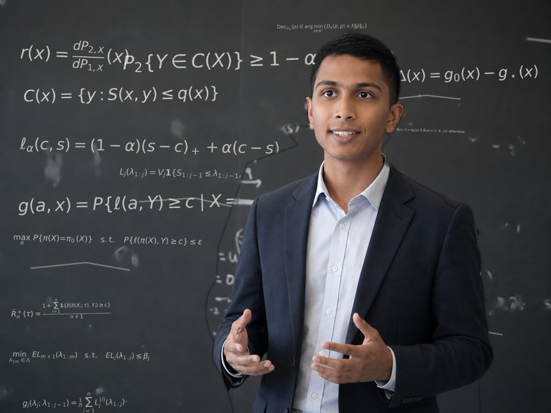

Hi! I'm a PhD student at PennAI interested in statistics, ML, and AI. I try to develop simple algorithms with theoretical guarantees that improve the reliability and performance of AI systems, in domains like NLP, image processing, and AI-for-math. I am grateful to be advised by Prof Edgar Dobriban and Prof Hamed Hassani. I received my AB in math from Princeton with highest honors.
My email address is sunayj [at] sas.upenn.edu and my desk is in Amy Gutmann Hall. Please reach out via email or social media, I'd love to learn from you! (I find collaboration much more fun than working in isolation.)
I am also fascinated by and excited to learn more about single-cell gene sequencing methods like spatial transcriptomics; structural biology methods like cryo-EM; medical imaging methods like MRI; manifold learning; non-probabilistic and geometric foundations of ML and representation learning; approximation theory for ML; leveraging data symmetry and representation theory in the design of learning algorithms and neural architectures; treating neurological diseases by analyzing EEG and genomic data in the brain; auditing the medical reasoning of clinical LLMs via statistics; auditing AI benchmarks via statistics; optimal control for robotics, macroeconometrics, steering generative AI (LLMs, diffusion models, flow matching models); mathematical statistical mechanics and its relation to probabilistic combinatorics, random matrix theory, and ML theory; the philosophy, foundations, and history of statistics; the precise relation between heirarchical and neural representations of data; analogies between optimization algorithms and stochastic and ordinary differential equations; mathematical and statistical finance and interpretable models of general multi-agent systems like mean-field games, especially in modeling financial crises; delineating the advantages of homogeneous vs heterogeneous agent swarms; network models in statistics; how AI agents handle uncertainty and ambiguity when deployed in complex settings; how to prevent p-hacking and other statistical crimes from being committed by data science AI agents; metacognitive algorithms for improving LLM performance; design choices when learning world models; anonymization and deanonymization of personal data on social media platforms; robustness, distribution shift, and out-of-distribution generalization in statistics and ML; algorithmic primitives for LLM jailbreaking and defenses; understanding why black-box Bayesian optimization works in practice, especially for drug discovery; analogies between statistics and analytic number theory; envisioning a future of "infinite-horizon" clinical trials; leveraging synthetic data in statistics; creating simulacra of human behavior both individual and collaborative by leveraging novel qualitative psychometric factors; the interface of statistics and entrepreneurship, especially in the context of AI evaluation and monitoring; inventing more interactive and continuouus modes of human-AI creative collaboration; co-creating personalized and aesthetic educational content using AI; cheaper music education with the help of AI and robotics; rethinking educational evaluation in the age of AI; improving home and public safety via passive AI-powered monitoring systems; extreme event prediction and mitigation; simple and generalizable hacks for boosting our collective physical health, mental health, and creativity; generative user interfaces; and designing scalable and inclusive academic workflows for our collective AI-empowered future.

Preprints and papers from our group.
Things I wrote, some incomplete.
Things written by others about math.
Things that may be helpful at all levels.